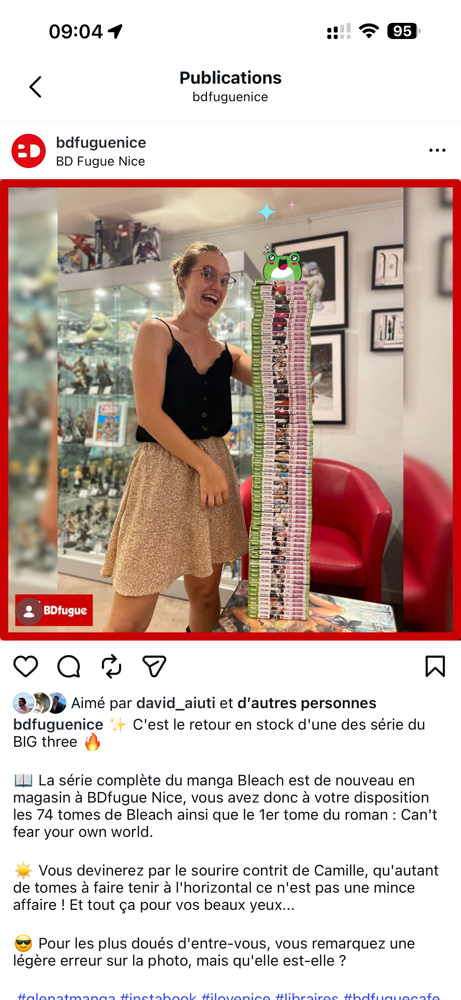
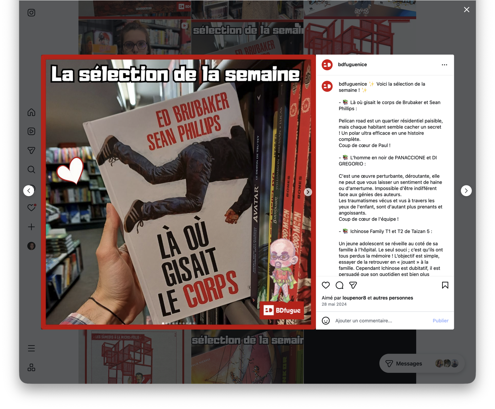
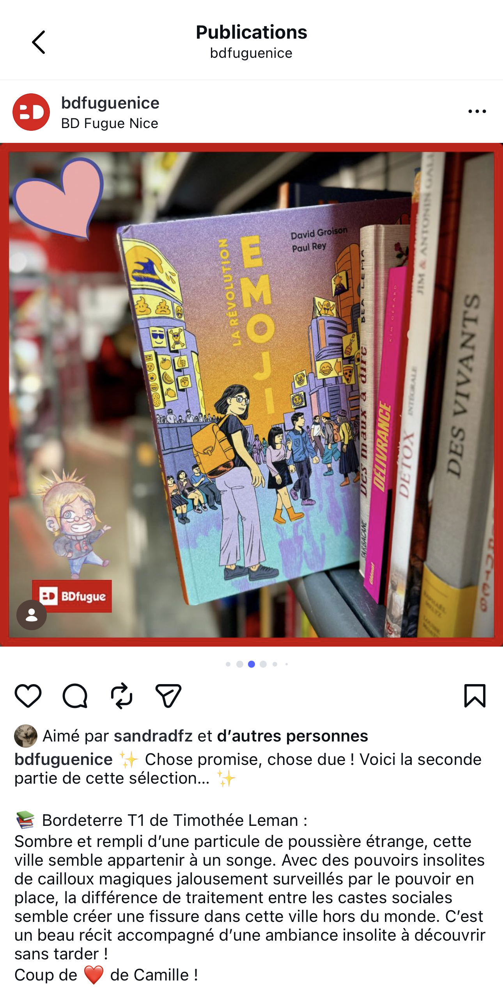
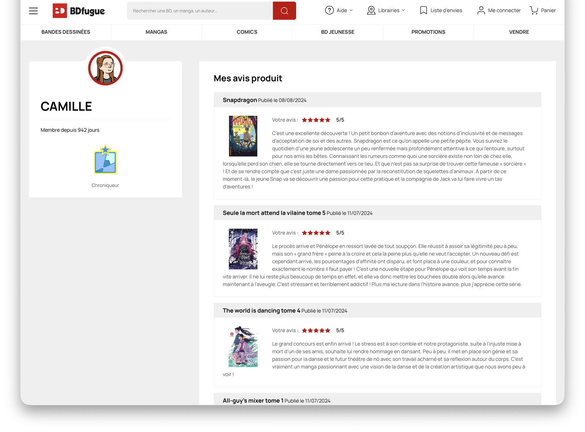
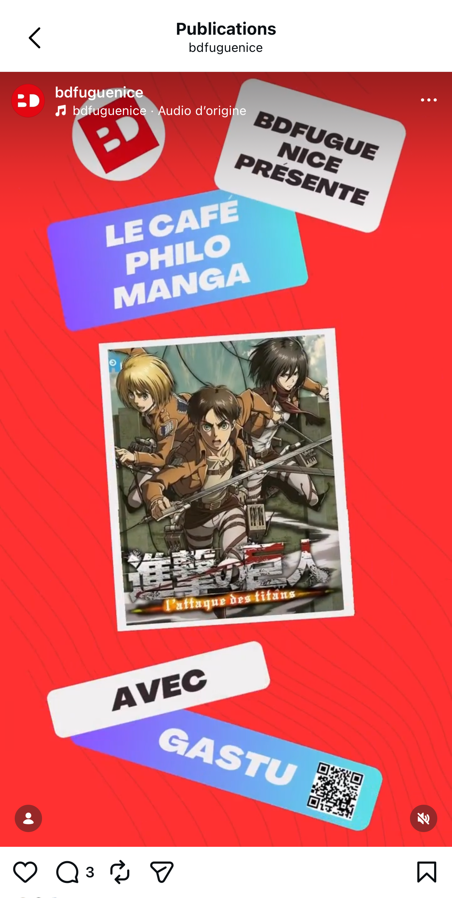

BDFugue Nice : médiation en librairie spécialisée
Expérience de terrain en librairie spécialisée bande dessinée, marquée par le conseil au public, la valorisation des fonds et le développement d'une culture éditoriale approfondie en BD.
- Emplacement
- BDFugue, Nice
- Date
- 2022 – 2024
- Rôle
- Libraire
- Type de projet
- Médiation du livre / librairie / valorisation de fonds
- Contenu
- Stage prolongé par une embauche, approfondissement des connaissances en bande dessinée et relation aux publics
Rayon manga et conseil spécialisé
J'avais la responsabilité du rayon manga : gestion, suivi des nouveautés, connaissance approfondie d'une offre spécialisée, conseil auprès des clients avec finesse et précision. Cette expertise a constitué un bloc central de mon expérience BDFugue et un fil rouge que j'ai retrouvé ensuite à la Librerit.
Le travail de conseil en librairie spécialisée demandait une attention particulière à la diversité des lectorats, des niveaux de connaissance et des attentes. Dans un fonds marqué par la bande dessinée, le manga et les cultures graphiques, il s’agissait à la fois d’accompagner des lecteurs déjà très informés et d’ouvrir l’accès à des œuvres plus exigeantes ou moins immédiatement visibles. Cette dimension a renforcé chez moi le goût d’une médiation précise, incarnée et adaptée aux profils rencontrés.
Réseaux sociaux, coups de cœur et sélections
J'assurais la communication Instagram de la librairie, la création d'une ligne éditoriale, la publication régulière de coups de cœur, de sélections de la semaine et de mises en avant. Je coordonnais également les coups de cœur de l'équipe pour la newsletter BDFugue.
Dans une librairie spécialisée, la valorisation du fonds ne relève pas seulement d’une logique de présentation : elle participe pleinement de la médiation. Mettre un ouvrage en avant, construire une sélection ou organiser une table thématique, c’est aussi orienter le regard, créer des points d’entrée dans le fonds et donner envie de découvrir des propositions parfois moins spontanément identifiées par le public.
Cafés philo manga et soirées One Piece
Je participais à la mise en place, à la valorisation et à la captation des cafés philo manga animés par Gatsu Sensei. J'organisais et j'animais aussi des soirées thématiques One Piece intégrant animations, jeux et vidéos, dans une librairie pensée comme lieu événementiel et communautaire.
Les cafés philo avec Gatsu Sensei représentaient une part importante de ce travail événementiel. J’en assurais la captation dans leur intégralité, avant d’en sélectionner certains passages pour produire des formats plus courts destinés aux réseaux sociaux. Ce travail supposait à la fois une attention au contenu des échanges, un repérage des extraits les plus pertinents et une réflexion sur la manière de restituer l’intérêt de la rencontre dans un format bref. Il prolongeait ainsi la médiation menée en librairie à travers une valorisation éditoriale et numérique des événements. La librairie fonctionnant aussi comme un lieu de convivialité, j’ai également été formée aux bases du service du bar. Même si cet espace restait simple, sans alcool ni restauration, cette mission faisait partie du fonctionnement quotidien du lieu et renforçait la dimension d’accueil, de disponibilité et de polyvalence dans la relation au public.
Captation et montage vidéo
Tournage et montage de vidéos courtes pour les réseaux sociaux (CapCut, Canva), adaptation au format vertical, couverture d'événements. Une compétence numérique directement transférable à la médiation culturelle.
Cette activité ne consistait pas seulement à publier du contenu, mais à adapter des formes de médiation à des formats numériques variés. Entre recommandation d’ouvrage, captation d’événements et circulation d’extraits courts, il s’agissait de conserver une intention éditoriale claire tout en tenant compte des contraintes propres aux réseaux sociaux, de leur rythme et de leurs usages.
Recommandation éditoriale et captation d'événements
À BDFugue, la médiation du livre se prolongeait aussi dans la communication numérique. J’ai participé à la création de contenus vidéo de formats variés, qu’il s’agisse de recommandations liées aux ouvrages ou de captations d’événements organisés par la librairie. Ces réalisations montraient comment le travail de librairie pouvait aussi passer par des formes de valorisation audiovisuelle adaptées aux réseaux sociaux.
Présentation d'une bande dessinée jeunesse
Cette vidéo publiée sur le compte Instagram de BDFugue Nice prenait la forme d’une recommandation courte et incarnée autour d’une bande dessinée jeunesse. Elle montrait ma participation à la mise en valeur éditoriale des ouvrages en librairie, dans un format pensé pour les usages des réseaux sociaux et pour une médiation plus directe auprès des publics. Elle témoignait aussi d’un travail d’adaptation du discours critique à un format bref, visuel et rythmé, capable de rendre une recommandation accessible sans perdre sa dimension éditoriale.
Voir cette publication sur Instagram
Café philo avec Gatsu Sensei
Une autre part importante de mon travail à BDFugue concernait la captation et la valorisation des événements organisés par la librairie, notamment les cafés philo avec Gatsu Sensei. J’enregistrais ces rencontres dans leur intégralité, puis je sélectionnais certains passages pour en produire des formats courts destinés aux réseaux sociaux. Ce travail associait captation, choix éditorial des extraits, montage et diffusion numérique d’un événement culturel.
Voir cette publication sur Instagram
Traces de médiation, de communication et d'événementiel






Retour analytique
Cette expérience m'a permis de consolider ma connaissance de la bande dessinée, du manga et des cultures graphiques, tout en développant une pratique concrète de la médiation en librairie spécialisée. Elle m'a appris à articuler conseil, valorisation du fonds, participation à des événements et communication numérique dans un même environnement professionnel.
Elle a aussi renforcé chez moi l'idée que l'humour peut constituer une très bonne porte d'entrée dans la médiation. Qu'il s'agisse de vidéos, de formats plus légers ou d'une manière de rendre certains contenus plus accessibles, cette dimension permet de capter l'attention, de désacraliser certains sujets et de créer un lien plus direct avec les publics, sans renoncer à la qualité de la recommandation.
Cette expérience a enfin confirmé mon intérêt pour les formes de médiation qui prolongent la librairie au-delà du face-à-face avec le lecteur, notamment à travers la captation, le montage et la diffusion de contenus liés aux événements culturels.